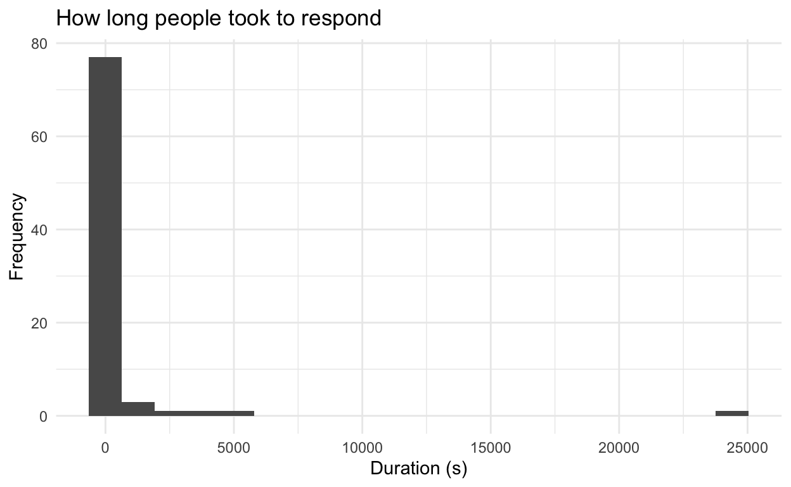
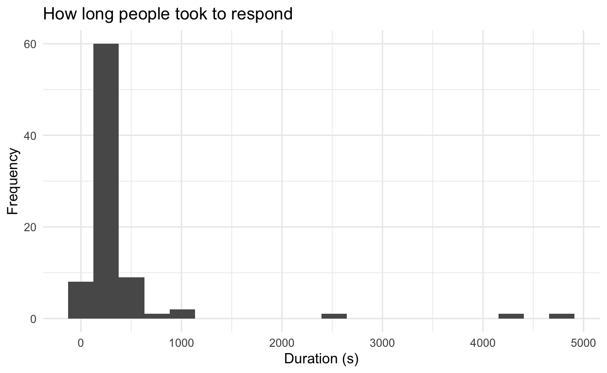
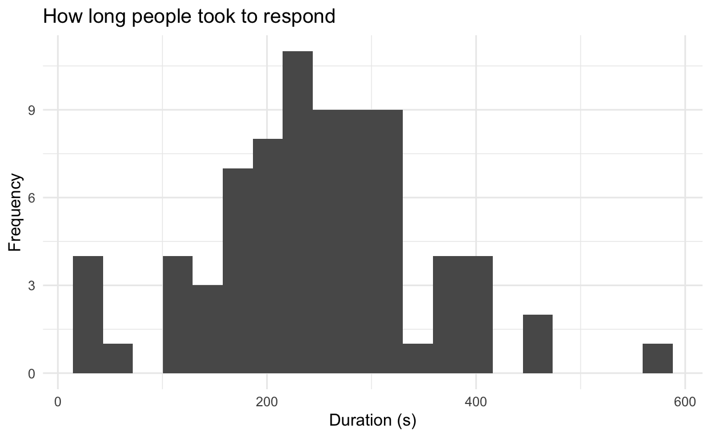
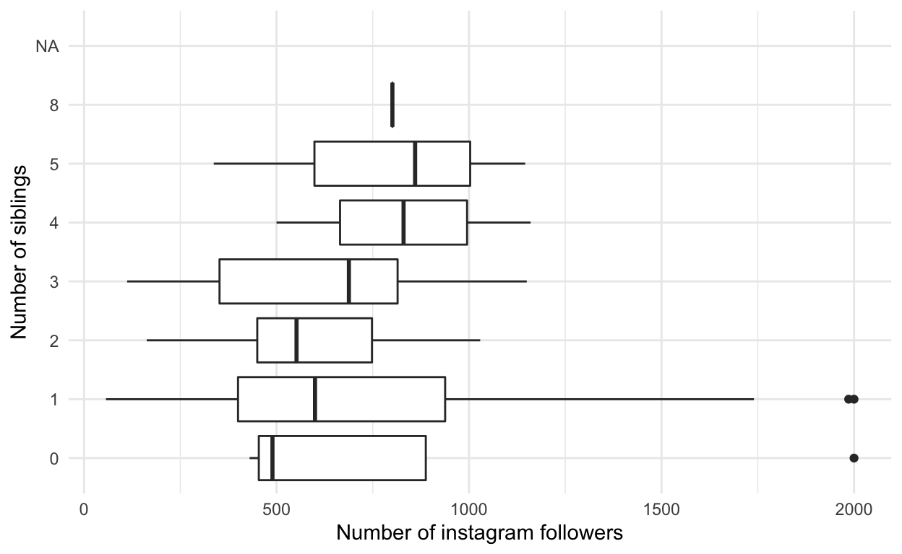
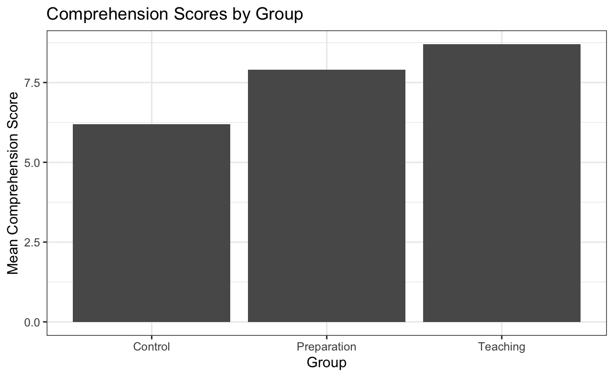
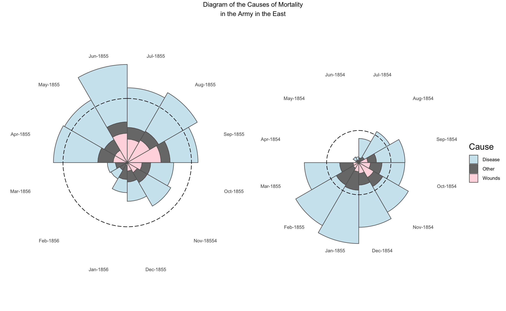
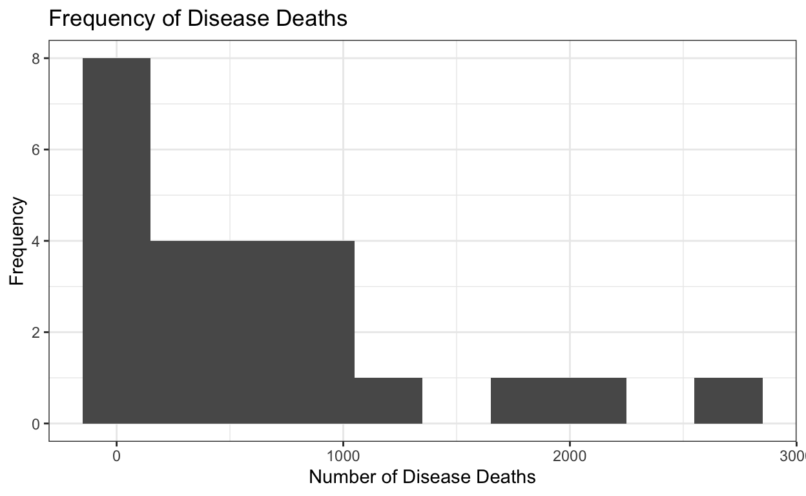
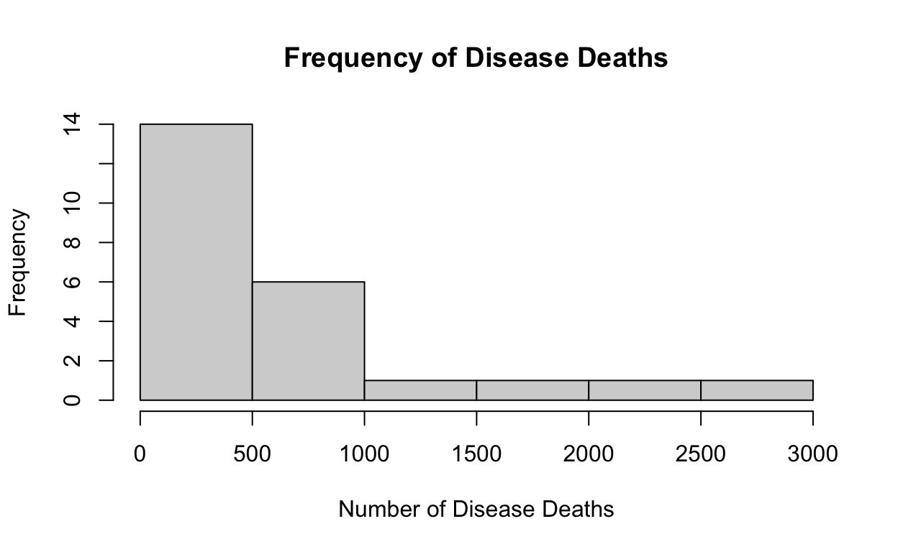
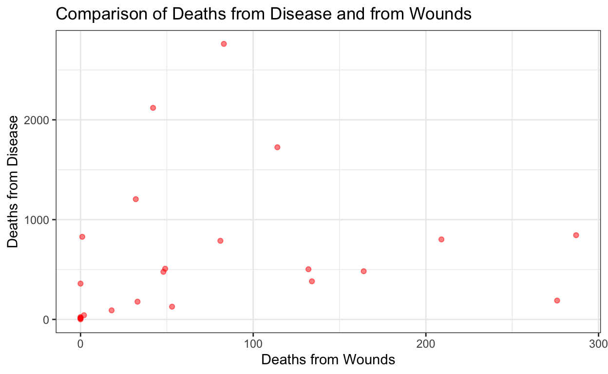
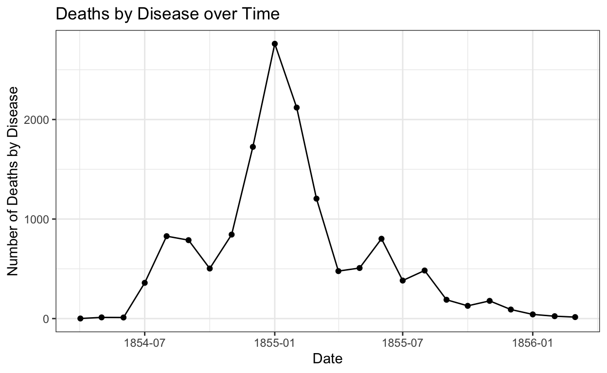

Completed exercises for the third lab
This document is meant to be used to practice after you have completed the tutorial for today’s lab. Please note that it uses some packages installed during that tutorial. Make sure to put your name as the author of the document, above!
If you would like to refer to the tutorial while also working on this document, open the HTML version of the tutorial (after closing it in RStudio) in a web browser to refer to the code. (In RStudio.Cloud, browse to the file in the Files pane, click on it, and click “View in Web Browser”.)
If you intend to work on both simultaneously, there are instructions on the wiki on how to do so.
You may also want to refer to past labs. Don’t forget that previous labs are linked to on the main labs website; Lab 2’s exercise answers are here.
In the tutorial, you learned how to manipulate and visualize data in a few ways. In today’s exercise, you’ll practice doing those with the friends data we collected together.
You’ll also get to continue learning about the filter() function and other ways of manipulating data.
I invite you to turn in this document on Brightspace, where I will provide some basic feedback. You do not need to do this, but you may find it useful. As always, a version of these exercises with my answers will be posted at the end of the week to the lab website: https://faculty.bard.edu/~jdainerbest/psy-203/labslist.html
I encourage you to do two things as you work through this document: (1) Save it frequently! Hit the disk image above to save, hit Command/Ctrl and s, or go to the File menu and click save. When the document is saved, the title of it will go from red to black. (2) Practice Knitting the document by hitting the Knit button. You can do it now—it’ll create an HTML file in the folder where this file lives. Knitting will both help to identify problems and provide a complete document for me to review.
Run the following code chunk to load necessary packages for these exercises. If any don’t load, install them with the install.packages("") function.
library(tidyverse)
# tidyverse loads these:
# library(dplyr)
# library(ggplot2)When you downloaded this document, you also downloaded a file called friends.csv. In the empty code chunk below, import those data now, using the read_csv() function and assigning it to a variable which I recommend you call friends. Don’t remember how to import data? We talked about it in Lab 2 (and you can follow that link to the section where we did so).
For most people, running this code by hitting the green “play” button to the right (or by hitting Ctrl/Command + Enter/return while your cursor is on the line) will “just work”; if it does not, consider adding “lab03/” before the “f” in “friends,” checking your working directory, or asking for help.
friends <- read_csv("friends.csv")Remember that red text reading “Parsed with column specification:” and some info is just R explaining how it “read” the file—not an error!
Use the space below to find out the following:
str() of the data?names() of the columns?head() of the data frame?friends. What is the class() of that column?
str(friends)
tibble [84 × 32] (S3: spec_tbl_df/tbl_df/tbl/data.frame)
$ duration : num [1:84] 464 332 399 328 37 ...
$ finished : num [1:84] 1 1 1 1 0 1 1 0 0 1 ...
$ whentook : POSIXct[1:84], format: "2020-08-27 13:05:27" ...
$ DistributionChannel: chr [1:84] "anonymous" "anonymous" "anonymous" "anonymous" ...
$ socialmedia : num [1:84] 1 12 1 12 NA 1 1 12 12 1 ...
$ gender : chr [1:84] "Female" "female" "Male" "Female" ...
$ siblings : num [1:84] 1 3 5 1 NA 1 3 1 2 1 ...
$ smed.hrs : num [1:84] 1 5 2 2 NA 1 3 1 4 1.5 ...
$ gram.followers : num [1:84] 158 800 337 400 NA 250 640 NA NA 439 ...
$ fbfriends : num [1:84] NA 1000 NA 500 NA NA NA NA NA NA ...
$ tvhours : num [1:84] 4 1 0 0 NA 5 4 NA NA 10 ...
$ haircolor : num [1:84] 2 1 1 1 NA 2 1 NA NA 2 ...
$ belief.in.god : num [1:84] 3 1 2 1 NA 2 2 NA NA 3 ...
$ liveoncampus : num [1:84] 1 1 1 2 NA 1 1 NA NA 1 ...
$ numclasses : num [1:84] 5 5 4 4 NA 5 4 NA NA 4 ...
$ numclassesremote : num [1:84] 0 2 0 4 NA 0 1 NA NA 1 ...
$ eatmeat : num [1:84] 1 2 3 2 NA 2 1 NA NA 3 ...
$ operas : num [1:84] 4 1 0 1 NA 2 0 NA NA 1 ...
$ cigarettes : num [1:84] 2 2 2 2 NA 2 2 NA NA 2 ...
$ like.science : num [1:84] 2 2 1 2 NA 1 2 NA NA 3 ...
$ harrypotter : num [1:84] 7 0 0 0 NA 7 7 NA NA 4 ...
$ registeredtovote : num [1:84] 1 4 1 1 NA 3 1 NA NA 1 ...
$ votefor : num [1:84] 1 5 1 2 NA 1 1 NA NA 1 ...
$ expectedoutcome_1 : num [1:84] 70 98 41 65 NA 30 70 NA NA 50 ...
$ expectedoutcome_2 : num [1:84] NA 30 25 38 NA 30 70 NA NA 40 ...
$ expectedoutcome_3 : num [1:84] NA 80 45 53 NA 30 70 NA NA 30 ...
$ expectedoutcome_4 : num [1:84] 100 0 100 85 NA 90 100 NA NA 100 ...
$ majordiv : num [1:84] 3 4 4 2 NA 4 2 NA NA 3 ...
$ hrs.sleep : num [1:84] 9 8 8 7 NA 8 7 NA NA 8 ...
$ height.unvalidated : num [1:84] 60 60 74 62 NA 65 65 NA NA 67 ...
$ shootingdrills : num [1:84] 1 1 1 2 NA 1 1 NA NA 1 ...
$ handedness : num [1:84] 4 4 4 3 NA 4 4 NA NA 4 ...
- attr(*, "spec")=
.. cols(
.. duration = col_double(),
.. finished = col_double(),
.. whentook = col_datetime(format = ""),
.. DistributionChannel = col_character(),
.. socialmedia = col_double(),
.. gender = col_character(),
.. siblings = col_double(),
.. smed.hrs = col_double(),
.. gram.followers = col_double(),
.. fbfriends = col_double(),
.. tvhours = col_double(),
.. haircolor = col_double(),
.. belief.in.god = col_double(),
.. liveoncampus = col_double(),
.. numclasses = col_double(),
.. numclassesremote = col_double(),
.. eatmeat = col_double(),
.. operas = col_double(),
.. cigarettes = col_double(),
.. like.science = col_double(),
.. harrypotter = col_double(),
.. registeredtovote = col_double(),
.. votefor = col_double(),
.. expectedoutcome_1 = col_double(),
.. expectedoutcome_2 = col_double(),
.. expectedoutcome_3 = col_double(),
.. expectedoutcome_4 = col_double(),
.. majordiv = col_double(),
.. hrs.sleep = col_double(),
.. height.unvalidated = col_double(),
.. shootingdrills = col_double(),
.. handedness = col_double()
.. )
names(friends)
[1] "duration" "finished" "whentook"
[4] "DistributionChannel" "socialmedia" "gender"
[7] "siblings" "smed.hrs" "gram.followers"
[10] "fbfriends" "tvhours" "haircolor"
[13] "belief.in.god" "liveoncampus" "numclasses"
[16] "numclassesremote" "eatmeat" "operas"
[19] "cigarettes" "like.science" "harrypotter"
[22] "registeredtovote" "votefor" "expectedoutcome_1"
[25] "expectedoutcome_2" "expectedoutcome_3" "expectedoutcome_4"
[28] "majordiv" "hrs.sleep" "height.unvalidated"
[31] "shootingdrills" "handedness"
head(friends)
# A tibble: 6 x 32
duration finished whentook DistributionCha… socialmedia
<dbl> <dbl> <dttm> <chr> <dbl>
1 464 1 2020-08-27 13:05:27 anonymous 1
2 332 1 2020-08-27 14:58:31 anonymous 12
3 399 1 2020-08-27 15:06:45 anonymous 1
4 328 1 2020-08-27 15:26:38 anonymous 12
5 37 0 2020-08-28 09:22:43 anonymous NA
6 563 1 2020-08-28 11:24:18 anonymous 1
# … with 27 more variables: gender <chr>, siblings <dbl>,
# smed.hrs <dbl>, gram.followers <dbl>, fbfriends <dbl>,
# tvhours <dbl>, haircolor <dbl>, belief.in.god <dbl>,
# liveoncampus <dbl>, numclasses <dbl>, numclassesremote <dbl>,
# eatmeat <dbl>, operas <dbl>, cigarettes <dbl>,
# like.science <dbl>, harrypotter <dbl>, registeredtovote <dbl>,
# votefor <dbl>, expectedoutcome_1 <dbl>, expectedoutcome_2 <dbl>,
# expectedoutcome_3 <dbl>, expectedoutcome_4 <dbl>, majordiv <dbl>,
# hrs.sleep <dbl>, height.unvalidated <dbl>, shootingdrills <dbl>,
# handedness <dbl>
class(friends$gender)
[1] "character"You can also click on the name friends in the “Environment” pane at the upper right of the RStudio screen; it will open it up in a tab for you to take a look. Does it look like you’d expect? (If you hit the blue “play button” arrow next to the name in that pane, you’ll see something that looks like what you saw when you ran the str() command.)
Use the count() command from library(dplyr) to figure out how many respondents responded anonymously by running it on the DistributionChannel column of friends.
friends %>% count(DistributionChannel)
# A tibble: 1 x 2
DistributionChannel n
<chr> <int>
1 anonymous 84Then, create a table() of siblings from friends.
table(friends$siblings)
0 1 2 3 4 5 8
6 34 24 12 2 4 1 Use a chain of filter() and count() to count how many classes (numclasses) the friends who have one sibling have. Said another way: filter() to people who have siblings of 1, then count() the number of classes.
friends %>%
filter(siblings == 1) %>%
count(numclasses)
# A tibble: 5 x 2
numclasses n
<dbl> <int>
1 3 3
2 4 25
3 5 3
4 8 1
5 NA 2Make a histogram of the duration it took people to finish the survey. Your choice if you use the ggplot() + geom_histogram() from ggplot2 or just hist(). Label your axes either way.
ggplot(friends, aes(x = duration)) +
geom_histogram(bins = 20) +
theme_minimal() +
labs(x = "Duration (s)", y = "Frequency", title = "How long people took to respond")
You may notice that this looks pretty bad because there’s an outlier. We can exclude them using filter()! Create a new variable called friends2 which filters out any duration over 10000 (hint: you’ll want the < sign, since we’re looking to keep in the new data frame any duration SHORTER than 10000). Then copy the code for the histogram to the space below, and re-run it (make sure to change to friends2, now).
friends2 <- friends %>% filter(duration < 10000)
ggplot(friends2, aes(x = duration)) +
geom_histogram(bins = 20) +
theme_minimal() +
labs(x = "Duration (s)", y = "Frequency", title = "How long people took to respond")
Not very normal, huh?
Have you saved this file? Please do. If you think your code should work, try knitting the document, too. Does it? If there are errors, can you identify them?
Create another data-frame variable called friends3, and this time filter out any duration over 600 s—seems like most people should have finished that in 10 minutes, barring them opening it and then getting distracted. Then, make a geom_histogram() of the data. (You can re-use your code, of course—just be sure to call it friends3 in the ggplot() command.) You should find that the data looks MUCH more normally-distributed, right?
friends3 <- friends %>% filter(duration < 600)
ggplot(friends3, aes(x = duration)) +
geom_histogram(bins = 20) +
theme_minimal() +
labs(x = "Duration (s)", y = "Frequency", title = "How long people took to respond")
If we actually dropped those people, that would be dropping seven responses. We won’t right now. It’s not necessarily bad data if someone took two hours to hit submit… but perhaps you’re seeing some of the decisions that we go into in data analysis and the preparation for it.
For this last visualization, we’re going to need to tell R that number of siblings is a factor, not a continuous variable. (No-one has 1.5 siblings.) Run the following code to do that. It literally tells R “this is a factor” with the factor() function.
friends$siblings <- factor(friends$siblings)Use friends (rather than friends2) for this. Make both a geom_boxplot() and a geom_violin() of the data for gram.followers against siblings. (You can try doing them as two layers on the same plot, but it doesn’t look too good.) Up to you which is x and which is y; this is a case where it doesn’t matter. Do add on a theme, and labs(). Play around with colors if you like—this is a great time to start learning how to do that.
ggplot(friends, aes(y = siblings, x = gram.followers)) +
geom_boxplot() +
theme_minimal() +
labs(x = "Number of instagram followers", y = "Number of siblings")
Based on the plot, do you think that people with more siblings have more of a social media presence? Are there any outliers?
Knit the document. How’s it looking?
Fiorella & Mayer (2013) hypothesized that students would learn course material better if they thought they were going to later be asked teach the material to the rest of the class. To test this, the researchers divided students into three groups. All groups read a short excerpt about the Doppler effect and were later given a 10-question quiz. The control group studied the excerpt and then immediately took the quiz. The preparation group was instructed that they would later teach the material to a group of students. This group studied the excerpt then immediately took the quiz. Finally, the teaching group was instructed that they would later teach the material to a group of students. This group studied the excerpt, taught it to a group of students, and then took the quiz. Fiorella & Mayer reported the following results:
| Group | n | Comprehension score | |
|---|---|---|---|
| M | SD | ||
| Control | 31 | 6.2 | 3.3 |
| Preparation | 32 | 7.9* | 2.4 |
| Teaching | 30 | 8.7* | 2.8 |
* Significantly different from control group at p < .05
data.frame() with the data above. Two suggestions: (a) name everything (the data frame variable, the columns) with lower case names without spaces (the group’s names will be in quotes, and can be however you like), and (b) remember that you name each column in the data.
graphdata <- data.frame(group = c("Control", "Preparation", "Teaching"),
n = c(31, 32, 30),
score = c(6.2, 7.9, 8.7),
sd = c(3.3, 2.4, 2.8))factor(), make the group column of your new data frame a factor.
graphdata$group <- factor(graphdata$group)ggplot2 and using the geom_col() layer. The x in your ggplot() aes() should be the group, and the y should be the comprehension score. Your graph should include a title, labeled axes, and clearly demonstrate the relationship between group and comprehension score. Feel free to add a theme.
ggplot(graphdata, aes(x = group, y = score)) +
geom_col() +
labs(x = "Group", y = "Mean Comprehension Score", title = "Comprehension Scores by Group") +
theme_bw()
graphdata$se <- graphdata$sd / sqrt(graphdata$n)
graphdata$se
[1] 0.5926975 0.4242641 0.5112077If you’re feeling comfortable with all of this, this exercise is for you. If not, it is not required.
The data lives in the HistData package, which we installed earlier.
install.packages("HistData")Load this package here, adn the data:
library(HistData)
data(Nightingale)This is the data from Florence Nightingale’s research in the 1850s on causes of death after the Crimean war—which we will discuss in class. You can take a look by running str(Nightingale). (As always, remove the tick marks before pasting that code into the Console.)
For the 24 months listed, the data has how many deaths were caused by disease in the column: Nightingale$Disease
Here’s a ggplot() version of the Nightingale coxcomb plot we saw in class—it’s also on wikipedia, here. For some more context, read this.
deaths <- Nightingale %>%
mutate(Month = factor(Month,
levels = c("Jan", "Feb", "Mar", "Apr", "May",
"Jun", "Jul", "Aug", "Sep", "Oct", "Nov", "Dec"))) %>%
pivot_longer(cols = c(Disease, Other, Wounds), names_to = "Cause", values_to = "Number")
year1 <- ggplot(deaths %>% slice(1:36)) +
geom_bar(aes(x = Month, y = Number, fill = Cause), color = "grey40",
stat = "identity", alpha = .6, width = 1.0, size =.5) +
coord_polar() +
scale_y_sqrt() + # actually, Nightingale used a square root transformation, which this applies
scale_x_discrete(limits = c("Jul", "Aug", "Sep", "Oct", "Nov", "Dec",
"Jan", "Feb", "Mar", "Apr", "May", "Jun"),
labels = c("Jul-1854", "Aug-1854", "Sep-1854", "Oct-1854",
"Nov-1854", "Dec-1854", "Jan-1855", "Feb-1855",
"Mar-1855", "Apr-1854", "May-1854", "Jun-1854")) +
geom_abline(intercept = sqrt(1000), slope = 0, linetype = 5) +
theme_classic() +
scale_fill_discrete(name = "Cause", type = c("light blue", "black", "pink")) +
theme(axis.line = element_blank(), axis.title = element_blank(),
axis.ticks = element_blank(), axis.text.y = element_blank(),
title = element_text(size = 16))
year2 <- ggplot(deaths %>% slice(37:72)) +
geom_bar(aes(x = Month, y = Number, fill = Cause), color = "grey40",
stat = "identity", alpha = .6, width = 1.0, size =.5) +
coord_polar() +
scale_y_sqrt() + # actually, Nightingale used a square root transformation, which this applies
scale_x_discrete(limits = c("Jul", "Aug", "Sep", "Oct", "Nov", "Dec",
"Jan", "Feb", "Mar", "Apr", "May", "Jun"),
labels = c("Jul-1855", "Aug-1855", "Sep-1855", "Oct-1855",
"Nov-18554", "Dec-1855", "Jan-1856", "Feb-1856",
"Mar-1856", "Apr-1855", "May-1855", "Jun-1855")) +
geom_abline(intercept = sqrt(1000), slope = 0, linetype = 5) +
theme_classic() +
scale_fill_discrete(name = "Cause", type = c("light blue", "black", "pink")) +
theme(axis.line = element_blank(), axis.title = element_blank(),
axis.ticks = element_blank(), axis.text.y = element_blank(),
title = element_text(size = 16), legend.position = "none")
gridExtra::grid.arrange(grobs = list(year2, year1), nrow = 1,
top = grid::textGrob("Diagram of the Causes of Mortality\nin the Army in the East"))
You don’t have to do that, however. (And we can all acknowledge that hers is more interesting to look at than this version!)
Label your axes in all of these plots.
Extension 1. Create a histogram using the full Nightingale$Disease data. Note that this should only involve the disease data—a histogram shows frequencies of how often you get a certain response. Is the data normally distributed?
# in ggplot:
ggplot(data = Nightingale, aes(x = Disease)) +
geom_histogram(binwidth = 300) +
theme_bw() +
labs(x = "Number of Disease Deaths", y = "Frequency", title = "Frequency of Disease Deaths")
# in base R:
hist(Nightingale$Disease,
xlab = "Number of Disease Deaths", ylab = "Frequency", main = "Frequency of Disease Deaths")
No, not normally distributed!
geom_point() layer from ggplot2.
ggplot(data = Nightingale, aes(x = Wounds, y = Disease)) +
geom_point(color = "red", alpha = .5) + # setting alpha as lower than 1 makes the points partially transparent
theme_bw() +
labs(x = "Deaths from Wounds", y = "Deaths from Disease",
title = "Comparison of Deaths from Disease and from Wounds")
Disease and Date.You’ll note that R is actually quite good at handling dates! It knows these dates are class(Nightingale$Date) == "Date"!
# in ggplot
ggplot(data = Nightingale, aes(x = Date, y = Disease)) +
geom_point() +
geom_line() +
theme_bw() +
labs(x = "Date", y = "Number of Deaths by Disease",
title = "Deaths by Disease over Time")
For attribution, please cite this work as
Dainer-Best (2020, Sept. 19). psychRstats: Learning Statistics for Psychology in R: Visualizing Data (Lab 03) Exercises, Completed. Retrieved from https://jdbest.github.io/r-psych-stats/answers/03-lab/
BibTeX citation
@misc{dainer-best2020visualizing,
author = {Dainer-Best, Justin},
title = {psychRstats: Learning Statistics for Psychology in R: Visualizing Data (Lab 03) Exercises, Completed},
url = {https://jdbest.github.io/r-psych-stats/answers/03-lab/},
year = {2020}
}
{kind=link}